|
 |
 |
||||||
|
|
|
||||||
This document describes:
OpenAccess models a variety of technology information in the technology database (oaTech). Some of this information is part of the process specification and is determined by the foundry, such as layers and foundry process rules. Other information is specific to an IP library being used by a given design, such as via and site definitions. Finally, some information is specific to a design library, such as the definition of a custom via being used in a particular route, or specific design constraints.
Technology databases are created in a library:
oaTech * oaTech::create(oaLib *lib)
Once created, a technology database can be populated with technology objects.
OpenAccess provides classes for modeling the following types of technology information.
A technology database contains technology attributes such as
You can explicitly set values for these attributes. For those that are not explicitly set, OpenAccess assigns default values.
A library database (oaLib) typically contains a single oaTech database (known as the primary oaTech), and all the designs in that library use that oaTech. Alternatively, a library can use an attached oaTech in another library as its primary oaTech. In this case, all the designs in the library use the attached oaTech database.
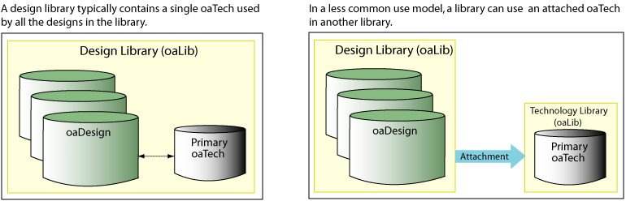
When a technology database contained in the design library is opened for a library, it is associated with the library and remains the technology database for that library until it is purged or the library is closed. For an attached technology database, the application can detach the attached technology database using oaTech::detach and attach a different one during usage.
An oaTech database can reference another oaTech database, which can in turn reference other oaTech databases, and so forth. A reference is a mechanism that allows an oaTech database to inherit information from other oaTech databases. This approach is known as using incremental technology databases.
A technology database references an oaLib by name. Typically, that oaLib contains a technology database, and that technology database is the target of the reference.
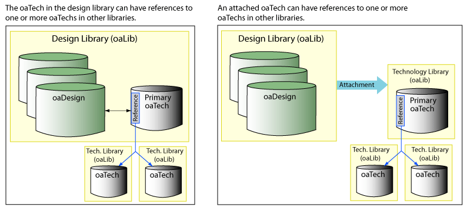
Note: If you open a design whose technology database cannot be opened, no error messages are issued, and the technology database is not bound to the design. To check for this situation, applications can use the oaDesign::getTech function. If this function returns NULL, the tech for the design cannot be opened. In addition, applications can attempt to directly open the tech for the design's library. This issues exception messages to help identify the problems.
A technology database can reference an oaLib that uses the attachment mechanism to associate with another oaLib that contains the target technology database.
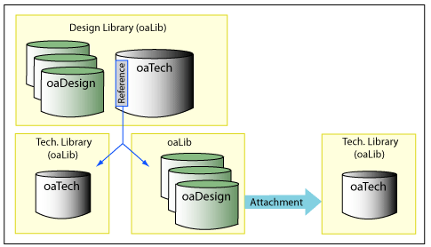
The attached oaLib might itself attach to another oaLib instead of containing an oaTech database. This chain of attachments can continue.
Applications can use incremental technology databases to provide technology information from multiple sources, such as the foundry, an IP provider, or a designer, to the application at different points in the design cycle. OpenAccess lets applications incrementally assemble technology information by creating references from one oaTech database to other oaTech databases.
In the following example, the technology database used by the Top design references two technology databases, the Standard Cell oaTech database and the RAM oaTech database. This means that all the design constraints and process information in the Standard Cell and RAM oaTech databases are applicable to the Top design. The Top design's oaTech database is a derived technology database because it is, in effect, inheriting information from the technology databases that it references. Furthermore, both the Standard Cell and RAM oaTech databases reference the Foundry 7LM variant oaTech database, which in turn references the Foundry oaTech database. This chain of references is known as the technology database graph. All the design rules from the Foundry oaTech database up to the primary design oaTech database apply to the design.
Note that each reference is created separately, and the technology database graph is created incrementally.
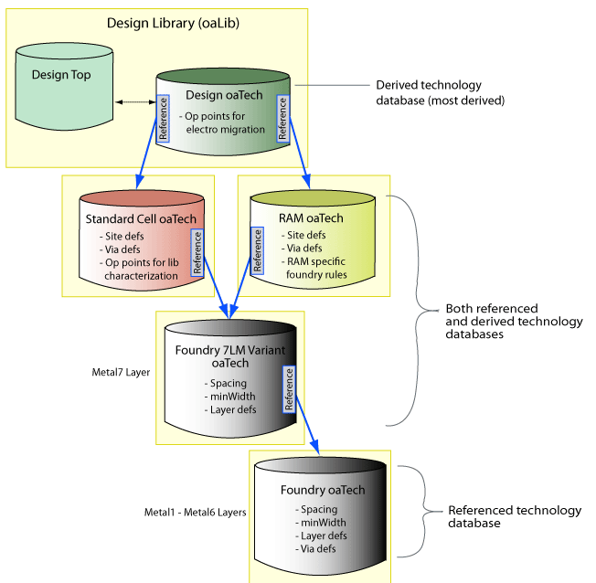
The following example shows another scenario for sharing technology information. In this example, the design instantiates elements from reference libraries, but does not need the technology information for those reference libraries. The Top design does not use via definitions or other technology objects defined in the oaTech databases of the two reference libraries. The Top design only requires its own oaTech database, which references the same foundry oaTech database that the reference libraries also use.
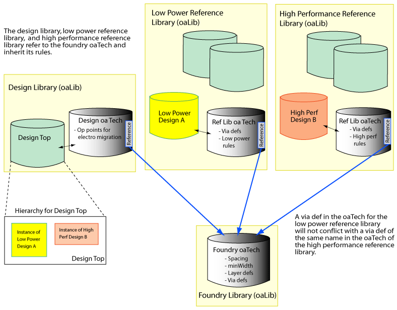
When an oaTech database references another oaTech, it inherits the information from that oaTech. When you set up an oaTech database with multiple references, the order in which you supply the references is reflected in the graph of technology databases. When OpenAccess traverses the graph of technology databases, it first searches in the most derived database, then moves on to the first referenced database. If that referenced database itself has references, those are examined next. This continues until the final referenced technology database is examined. At this point, if necessary, OpenAccess will move to the next reference that you supplied for the most derived database, and begin that traversal.
For example, in the following figure, the Top design's oaTech database has its first reference to the Standard Cell oaTech database, and has a second reference to the RAM oaTech database. When searching for technology information, OpenAccess first examines the design's oaTech database, then the Standard Cell oaTech database, then the foundry 7LM Variant oaTech database, then the Foundry oaTech database. Finally, if the information is not found, OpenAccess goes to the second reference for the Top design's oaTech and searches the RAM oaTech database, which is the last database searched.
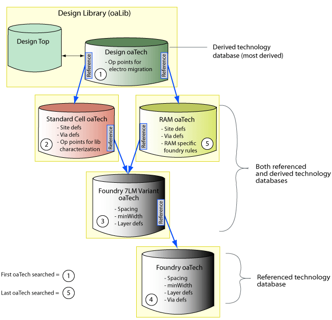
OpenAccess prevents conflicting technology objects in a graph of technology databases whenever possible. Accordingly, the search path is not part of an ability to choose a preferred item between multiple items with the same name. However, oaGroups, oaAppDefs, and oaProps are not formally supported by the incremental technology database functionality, so name collisions are not prevented. For these object types, a user can search for an object within the scope of an entire graph of techs by setting up a search using the oaTechHeaderArray returned from oaTech::getTechHeaders (with the local argument set to false).
OpenAccess lets you use information from multiple oaTech databases by setting references from the current oaTech database to other oaTech databases. You supply the list of references in the form of an oaTechArray object. As described in the previous section, the order of the references in the array can be important.
To set the references for the current technology database, pass in the oaTechArray object:
void oaTech::setRefs(const oaTechArray &refs)
When setRefs() is used, pre and post-modify observers are called from oaObserver<oaTech> using the oacSetRefsTechModType.
The setRefs operation is not allowed if it introduces a conflict in the graph of techs. For more information, refer to Conflicts in Incremental Technology Databases .
To change the set of references for a technology database, call the setRefs function again and pass in a different oaTechArray object.
To remove the references from a technology database, use:
oaTech::unsetRefs()
OpenAccess provides a programming example that uses incremental technology database references. Refer to the description of this example (incrTechDB) in the Programmers Guide.
When an application opens a technology database, OpenAccess attempts to open each of the referenced technology databases in the graph rooted at that technology database. Consider Figure 4: Technology Database Graph. If an application opens the Top design, all the oaTech databases in the pictured graph will be opened if possible. If the application opens the RAM oaTech database, only the foundry 7LM variant and the foundry oaTech databases will be opened.
In either case, if one of the referenced technology databases cannot be found or opened, the reference to it becomes unbound and its data cannot be accessed. The oaTechHeader class stores information about bound or unbound technology database references for a derived technology database. OpenAccess issues an onUnboundRef notification when a referenced database cannot be opened at the time the derived database is opened. A notification is made for each unbound referenced database that is encountered.
See Getting Information About Referenced Technology Databases for more information about oaTechHeaders.
OpenAccess provides observers that an application can use to monitor events when opening incremental technology databases. Consider the following set of incremental technology databases.
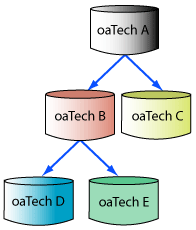
Assume that the application has derived observers to receive notifications when references to incremental technology databases are bound, and when technology databases are opened. If none of the technology databases are open, and oaTech A is opened, the following sequence of observers is called:
Consider the same example, except this time, oaTech B is open, but oaTech D does not exist. The following sequence of observer notifications is called when oaTech A is opened.
Note: Observers are also provided for getting information about conflicts in incremental technology databases.
You can explicitly set values for technology database attributes. For attribute values that are not explicitly set, OpenAccess assigns default values. The following table shows the technology database attributes that are available and their default values.
Technology Database Attributes |
Default Value |
|||
|---|---|---|---|---|
| DefaultManufacturingGrid | 0 | |||
| ClearanceMeasure | oacEuclidianClearanceMeasure | |||
| isGateGrounded | false | |||
| processFamily | "" (empty string) | |||
| oacMaskLayout | oacSchematic | oacSchematicSymbol | oacNetlist | |
| DBUPerUU | 1000 | 160 | 160 | 160 |
| userUnits | oacMicron | oacInch | oacInch | oacInch |
When working with incremental technology databases, explicitly set values take precedence over implicit ones. If none of the oaTech's in a graph have explicitly set a particular attribute value, such as DBUPerUU, the default value applies to all the oaTechs in the graph. If one of the oaTechs has an explicitly set value for DBUPerUU, that value applies to all the oaTechs derived from that oaTech in the graph. For example, in the following graph, oaTech A inherits the explicitly set value of 2000 for DBUPerUU from oaTech Y.
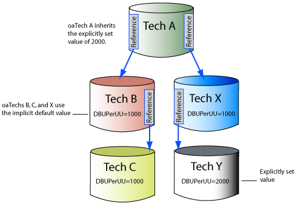
A conflict occurs when there are two or more explicitly set attribute values that differ. Whenever possible, OpenAccess prevents applications from setting conflicting values for attributes. For more information, refer to Conflicts in Incremental Technology Databases .
Applications can use the get<attrribute> functions with the local argument in order to get the local attribute value only. For example:
oaTech::getDBUPerUU(const oaViewType *viewType,
oaBoolean local) const;
Functions that get technology attribute values return an explicitly set attribute value if one is available. Otherwise, the default value is returned. If an application calls getDBUPerUU on one of the databases in a graph, the function returns the explicitly set attribute value that is closest to the oaTech from which the call was issued. For example, in Figure 8: Inheriting Explicit Attribute Values, a call to getDBUPerUU from oaTech X returns the explicitly set value from oaTech Y, namely, 2000. If there is no explicitly set value, the implicit default value is returned.
Functions are provided to determine whether or not an attribute on an oaTech was explicitly set. For example, oaTech::isDBUPerUUSet returns true if the attribute has an explicitly set value. There is also an oaTech::unsetDBUPerUU function that returns the attribute to its implicit default value. (An exception is issued if this function is called on an attribute that was not explicitly set.)
Important: Versions of OpenAccess prior to 2.2.7 (x201) do not manage the distinction between explicit and implicit technology attributes. If a database containing explicitly set technology attributes is opened in a version of OpenAccess prior to 2.2.7 (x201), the setting that indicates that a technology attribute was explicitly set is lost. If that same database is then opened again by a newer version of OpenAccess, all the technology attributes are interpreted as having been explicitly set.
Foundries often use multiple graphs of technology databases where each graph includes a tech for the base process plus other techs to define the variant of the process. It is important to distinguish the technology databases for one process variant from techs belonging to other variants. OpenAccess includes an API to designate the processFamily attribute for a database in order to avoid mixing techs for one process variant with those for other process variants. While mixing technology databases that have different processFamily attributes is prohibited, mixing databases that have the same processFamily attribute with those that have no processFamily attribute is permitted.
You set the processFamily attribute for a technology database with the oaTech class setProcessFamily() API. In addition, there is an API to unset the processFamily (oaTech::unsetProcessFamily), and to get the processFamily (oaTech::getProcessFamily).
When using incremental technology databases, it's important to understand how OpenAccess manages technology objects, technology attributes, and constraints across a graph of technology databases. In particular, understanding how OpenAccess deals with conflicts is important.
OpenAccess prevents the introduction of conflicts in a graph of technology databases whenever possible.
If a setRefs operation would create a graph of techs that included conflicting (explicitly set) technology database attribute values, an observer notification is issued and an oacTechSetRefsConflicts exception is thrown.
Similarly, if setRefs would introduce a conflicting technology object, an onConflict observer is issued and the oacTechSetRefsConflicts exception is thrown.
For both types of conflicts, one observer notification is issued for each conflict. Multiple conflicts produce multiple observers.
The following example shows a simple conflict involving an oaLayer.
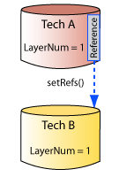
Each of these techs has a layer number 1, so OpenAccess issues a single observer notification and throws an exception. The observer notification indicates that
oaObserver<oaTech>::onConflict(oaTech *mostDerivedTech,
oaTechConflictTypeEnum conflictType
oaObjectArray conflictingObjs,
);
An object can have conflicts in more than one database. In the following example, Tech A attempts to set references to Tech C and Tech B.
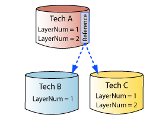
Each of the three techs has a layer with layer number 1. In addition, Tech A and Tech B both have a layer with layer number 2. In this example, OpenAccess issues two observer notifications and throws an exception.
One observer reports that
A second observer reports that
In the following example, Tech A attempts to set a reference to Tech B. Tech B has an existing reference to Tech C, which is not currently open. In order to set the reference from Tech A to Tech B, OpenAccess will check for and open any databases in the graph of techs that are not already open.
In this example, OpenAccess attempts to open Tech C. As a result of this, a conflict is encountered, an observer notification is issued, and an exception is thrown. The observer notification indicates Tech A is the most derived tech, and that the layer number 1 is contained in Techs A, B, and C.
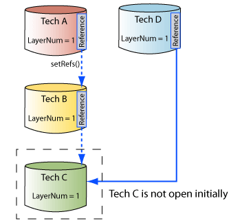
This particular example demonstrates another sort of conflict, which is less common. Notice that Tech D has a reference to Tech C, and that they both contain a layer with layer number 1. When Tech C was opened as a result of the setRefs operation from Tech A to Tech B, this other conflict, from Tech D to Tech C, becomes apparent and OpenAccess issues another observer notification for Tech D as the most derived tech. This notification reports that there is a conflict for layer number 1 in Tech D and Tech C.
Refer to Resolving Conflicts for details about how to resolve such conflicts.
When an attempt is made to set conflicting technology database attribute value, the operation is prevented an an exception is thrown.
The following table lists the functions for setting technology database attributes and lists the corresponding exceptions that are thrown when there are conflicts.
Function |
Exception |
|---|---|
| oaTech::setDBUPerUU | oacConflictingDBUPerUUInTech |
| oaTech::setUserUnits | oacConflictingUserUnitsInTech |
| oaTech::setClearanceMeasure | oacConflictingClearanceMeasureInTech |
| oaTech::setDefaultManufacturingGrid | oacConflictingDefaultManufacturingGridInTech |
| oaTech::setGateGrounded | oacConflictingGateGroundedInTech |
| oaTech::setProcessFamily | oacConflictingProcessFamilyInTech |
If an attempt is made to create a technology object that would introduce a conflict into a graph of techs, an exception is thrown. For example, when creating an oaPurpose, the following exceptions can be thrown:
The following table lists all the technology objects, and shows the characteristics that are used to uniquely distinguish these objects.
Technology Database Object |
Matching Characteristics |
Exception |
|---|---|---|
| oaAnalysisLib | Name | oacAnalysisLibNameExists |
| oaConstraint | Name | oacConstraintNameExists |
| oaConstraintGroup (in an oaTech) | Name | oacConstraintGroupNameExists |
| oaLayer | Name | oacConflictingLayerNamesInTech |
| Number | oacConflictingLayerNumbersInTech | |
| oaDerivedLayer | derivation | oacLayerDerivationExists |
| oaPhysicalLayer | excludedLayer | oacLayerIsExcluded |
| oaPurpose | Name | oacPurposeNameExists |
| Number | oacPurposeNumberExists | |
| oaSiteDef | Name | oacSiteDefExists |
| oaViaDef | Name | oacViaDefExists |
| oaViaSpec | Layer1 and layer2 | oacViaSpecExists |
| oaViaVariant (in an oaTech) | Name | oacViaVariantNameExists |
| oaStdViaVariant oaCustomViaVariant |
(viaDef, params) | oacViaVariantViaDefParamsExists |
Conflicting technology objects or technology attribute values can be introduced if one of the techs in a graph is edited out of context of the rest of the graph. These conflicts are made apparent when the oaTech::open, oaTech::validate, or oaTech::setRefs functions are called. When OpenAccess encounters conflicts in a graph during one of these operations, observer notifications are sent.
For conflicting technology objects, OpenAccess issues onConflict observer notifications. One observer is issued for each conflicting technology object. Another type of conflict occurs when excluded layers are present. OpenAccess issues an onExcludedLayerConflict in this case.
Technology Database Object |
Matching Characteristics |
Observer |
Conflict Type |
|---|---|---|---|
| oaAnalysisLib | Name | oaObserver<oaTech>::onConflict | oacAnalysisLibNameTechConflictType |
| oaConstraint | Name | oaObserver<oaTech>::onConflict | oacConstraintNameTechConflictType |
| oaConstraintGroup (in an oaTech) | Name | oaObserver<oaTech>::onConflict | oacConstraintGroupNameTechConflictType |
| oaLayer | Name | oaObserver<oaTech>::onConflict | oacLayerNameTechConflictType |
| Number | oaObserver<oaTech>::onConflict | oacLayerNumTechConflictType | |
| oaDerivedLayer | derivation | oaObserver<oaTech>::onConflict | oacDerivedLayerTechConflictType |
| oaPhysicalLayer | excludedLayer | oaObserver<oaTech>onExcludedLayerConflict | No type |
| oaPurpose | Name | oaObserver<oaTech>::onConflict | oacPurposeNameTechConflictType |
| Number | oaObserver<oaTech>::onConflict | oacPurposeNumTechConflictType | |
| oaSiteDef | Name | oaObserver<oaTech>::onConflict | oacSiteDefNameTechConflictType |
| oaViaDef | Name | oaObserver<oaTech>::onConflict | oacViaDefNameTechConflictType |
| oaViaSpec | Layer1 and layer2 | oaObserver<oaTech>::onConflict | oacViaSpecTechConflictType |
| oaViaVariant (in an oaTech) | Name | oaObserver<oaTech>::onConflict | oacViaVariantNameTechConflictType |
| oaStdViaVariant | (viaDef, params) | oaObserver<oaTech>::onConflict | oacStdViaVariantTechConflictType |
| oaCustomViaVariant | (viaDef, params) | oaObserver<oaTech>::onConflict | oacCustomViaVariantTechConflictType |
For conflicting technology database attributes, each has its own conflict observer (shown in the following table).
Function |
Conflict Observer |
|---|---|
| oaTech::setDBUPerUU | onDBUPerUUConflict |
| oaTech::setUserUnits | onUserUnitsConflict |
| oaTech::setClearanceMeasure | onClearanceMeasureConflict |
| oaTech::setDefaultManufacturingGrid | onDefaultManufacturingGridConflict |
| oaTech::setGateGrounded | onGateGroundedConflict |
| oaTech::setProcessFamily | onProcessFamilyConflict |
OpenAccess allows the affected databases to be opened so that the conflicts can be resolved. The application can either resolve the conflict, or present information to end users to allow them to resolve the conflict. The easiest way to resolve conflicts is to determine which of the conflicted objects or attribute values is preferred and delete the other ones. Note that these changes might not be possible if the application does not have edit access to the tech databases. The application should not proceed until the conflict is resolved.
The oaTech::validate can be used to check for conflicts. This function issues observer notifications and returns FALSE if there are duplicate technology objects or duplicate technology attributes with conflicting explicit values in the graph of techs. After some conflicts are resolved, an application can use this function to determine if there are any remaining conflicts. (End users can also use this function directly.)
When all the conflicts are resolved, the setRefs function can be used again to create the graph of techs.
If the processFamily string attribute for a given technology database is not set, or is set to an empty string, that technology database is not in conflict with other technology databases that have non-null processFamily attributes. This allows inclusion of generic technology databases that are not process specific in a graph of techs.
In the following figure, the empty processFamily attribute does not cause a conflict. However, the CMOS and BICMOS do represent a conflict.
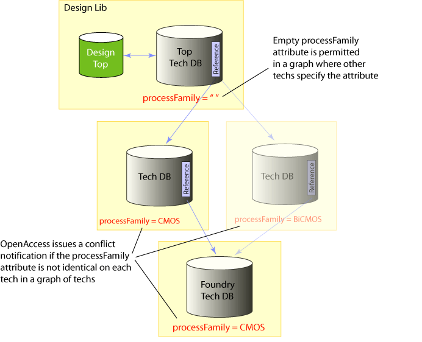
Applications that are compiled against earlier versions of the OpenAccess shared libraries cannot detect processFamily conflicts that occur due to out-of-context edits. Applications compiled against earlier shared libraries also cannot edit a database if it contains a processFamily attribute.
Layers can be excluded by name from a graph of technology databases. This capability provides safeguards to ensure that a graph of technology databases do not have inadvertent references to incompatible layers. The following figure shows how the layer exclusion feature might be used.
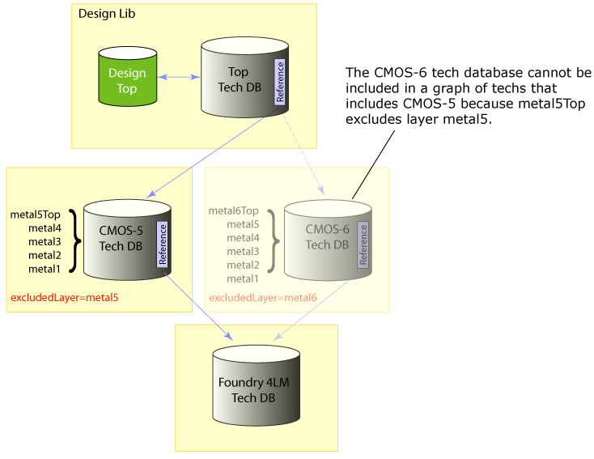
The oaPhysicalLayer class supports layer exclusion with the following APIs:
The layer exclusion feature identifies layers that are incompatible within a graph of techs. It is not intended for defining large numbers of incompatible layers among several foundry processes. For example, if a foundry encodes the name of the process in the names of its layers, listing all the incompatible layers in all the other processes is not recommended. The correct way to prevent process incompatibilities among a graph of techs is by attaching a processFamily attribute to each member of the graph.
Excluding layers does not ensure that a given oaDesign that references a given graph of techs can be instantiated in another oaDesign that references a different graph of techs. Layer exclusion is implemented by checking layers within a graph of techs, not by performing checks among multiple graphs.
oaPhysicalLayer, oaSizedLayer and oaDerivedLayer objects are all subject to the same layer exclusion criteria.
The setExcludedLayers() API uses the oaLayerNameArray utility class to create an excludedLayerNames list. A layer name can be included only once in the list. An exception is thrown if a layer included in the list already exists in the local technology database or exists in any of the databases among the graph of techs that the current tech database belongs to. It is also an error to attempt to set an exclusion list on a layer that is already in a conflicted state.
The API call for unsetting the excludedLayerNames list is oaPhysicalLayer::unsetExcludedLayers(), or you can call oaPhysicalLayer::setExcludedLayers() with an empty excludedLayerNames array to clear the excluded layers list.
OpenAccess creates oaTechHeader objects automatically as needed to support references to technology databases. You can get an ordered list of technology databases that are referenced by the current technology database with the following function:
void oaTech::getTechHeaders(oaTechHeaderArray &refHeaders,
oaBoolean local) const
The returned array is ordered in a depth first manner, as described in Figure 6: Order of References and Search Order.
If the local argument is set to true, the function returns only the technology database headers that are directly referenced by the current technology database. If local is false, the function returns the complete set of technology database headers that comprise the graph rooted at the current technology database.
For example, in the following figure, assume that the current technology database is the Standard Cell oaTech. In this case, if local is set to true, the returned list includes only the headers from the Standard Cell oaTech to the Foundry 7LM Variant oaTech. However, if local is set to false, the list includes the headers from the Standard Cell oaTech to the Foundry 7LM Variant oaTech, and from the Foundry 7LM Variant oaTech to the Foundry oaTech.
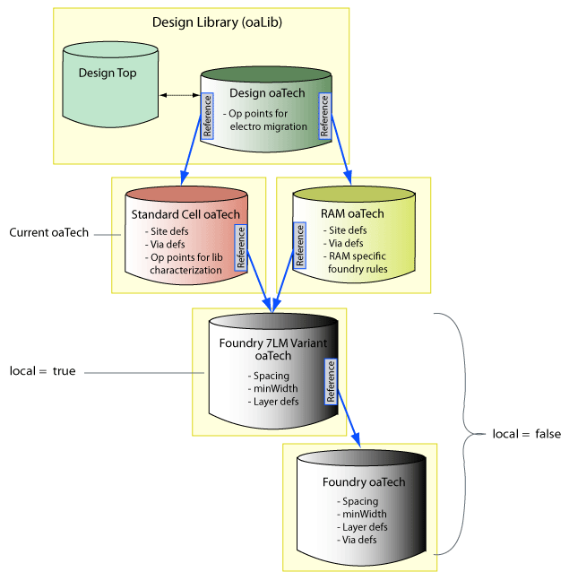
You can also get a list of the technology databases that have references to, or use, the current technology database. The following function returns an ordered collection of other open technology databases that contain references to the current technology database:
oaCollection<oaTechHeader, oaTech> oaTech::getUsedIn() const
OpenAccess provides functions to find technology objects within a graph of technology databases. You can also search for technology objects within a single technology database. The default search supported by the ::find function for each technology object searches throughout the graph of technology databases that is rooted at the current technology database. This is done is a depth first manner, as described in Figure 6: Order of References and Search Order.
For example, the following function can find and return an oaViaDef from any technology database in the graph.
oaViaDef* find(const oaTech *tech, const oaString &name)
Whereas the following function returns an oaViaDef from the current technology database only if local is set to true.
oaViaDef* find(const oaTech *tech, const oaString &name, oaBoolean local)
Returning collections of technology objects is handled in a similar, but not identical manner. For example, the following returns a collection of all operating points in all oaTech databases in the graph rooted at the current oaTech database.
oaCollection<oaOpPoint, oaTech> oaTech::getOpPoints() const
A new function enables you to specify whether the collection includes all objects in the graph, or only objects that are local to the current oaTech database. You can provide the filterFlags argument to this function to specify that you want to return the collection of operating points only in the current oaTech. To search only the current technology database, use oacOpPointIterLocal as the filterFlag. To search all the referenced technology databases, use oacOpPointIterAll.
oaCollection<oaOpPoint, oaTech> oaTech::getOpPoints(oaUInt4 filterFlags) const
Important: OpenAccess will continue to support the oaTech::getOpPoints ( ) function for compatibility purposes. However, it is recommended that you use the function with the filterFlags argument instead. This is true for any of the oaTech get functions that return technology object collections.
If the state of the technology graph changes, the contents of any current oaCollections that search the referenced technology databases become undefined.
Technology database objects are used in the design database. For example, an oaViaDef technology object is used to create an oaVia, and an oaSiteDef technology object is used to create an oaRow.
When an application creates a design object that uses a technology object, OpenAccess refers to an in-memory technology object. For example, oaCustomVia::create() uses oaCustomViaDef* as a parameter:
oaCustomVia * oaCustomVia::create(oaBlock *block,
const oaCustomViaDef *viaDef,
const oaTransform &xform,
const oaParamArray *params = NULL
) [static]
The oaCustomViaDef object can be in any of the following locations:
The oaCoreBoxSpec object is handled a little differently. For this object, the technology object information can be set after the object is created. The oaCoreBoxSpec::setSiteDef() function has two variants. The first one takes an oaSiteDef object and works like the oaCustomVia::create function above. The second should specify an oaSiteDef name, which OpenAccess uses to look up the oaSiteDef across the graph of technology databases.
void oaCoreBoxSpec::setSiteDef(oaSiteDef *siteDef)void oaCoreBoxSpec::setSiteDef(const oaString &name) [inline]
OpenAccess prevents users from creating design objects that use technology objects that have conflicts across the graph of technology databases if all the objects are in memory. If technology databases are edited out of context, conflicts might occur and it is the responsibility of the application to handle these conflicts. Refer to Working with Technology Objects, Technology Attributes, and Constraints for more information.
The oaDerivedLayer, oaSizedLayer, oaViaDef, and oaViaSpec objects each use oaLayer objects as part of their object definition. These layer objects can be in referenced oaTech databases.
For example, an oaStdViaDef is created in the specified oaTech database. The layers for the oaStdViaDef can be in that same oaTech database, or in a referenced oaTech database in the graph rooted at that oaTech.
oaStdViaDef * oaStdViaDef::create(oaTech *tech,
const oaString &name,
oaPhysicalLayer *layer1,
oaPhysicalLayer *layer2,
const oaViaParam ¶ms,
oaPhysicalLayer *implant1 = NULL,
oaPhysicalLayer *implant2 = NULL
)
OpenAccess provides a function to find an oaViaDef by name across a graph of technology databases.
oaViaDef * oaViaDef::find(const oaTech *tech,
const oaString &name,
oaBoolean local
)
Note: If the local argument is set to true, the function searches only in the current technology database.
A design typically has a number of conditions that must be met in order for the design to be correct. Many applications refer to these as rules, but OpenAccess uses the more generic term, constraints. This section describes how constraints can be used in incremental technology databases. For a general understanding of constraints, refer to Creating and Modeling Process Rules and Constraints first.
In OpenAccess, a constraint group lets you apply a collection of constraints to specific objects in an oaDesign, oaTech, or oaWafer database. A constraint group can contain members that are individual constraints or constraint groups. Constraints and constraint groups cannot have conflicting names across the graph of technology databases.
A number of constraint groups are built into OpenAccess. Every object that can have constraints has a built-in constraint group that is returned by oaObject::getConstraintGroup. The classes oaTech, oaModule, oaDesign, oaBoundary, and oaBlock are container classes that each have an additional built-in default constraint group that is returned by the getDefaultConstraintGroup function on that class. An oaTech also has a built-in foundry constraint group that is returned by oaTech::getFoundryRules.
The built-in default and foundry constraint groups are automatically linked across the set of technology databases in a graph. These built-in constraint groups have an implicit member that contains a header to bind to the built-in constraint group in the next referenced technology database in the graph.
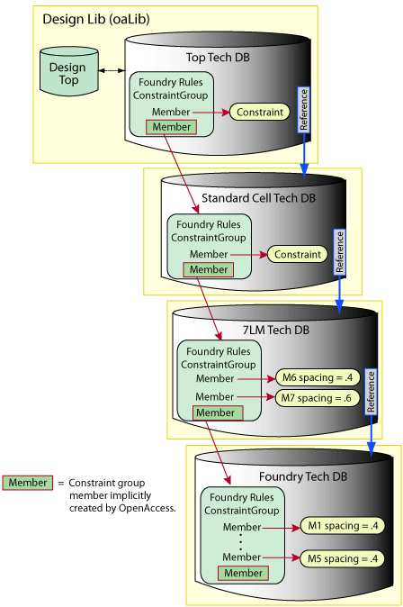
Applications can create user-defined constraint groups to organize the access to their constraints and to provide a way to reuse a set of constraints. Applications create user-defined constraint groups with the oaConstraintGroup::create function.
User-defined constraint groups do not have the automatic implicit constraint groups. This must be done manually.
A constraint group (built-in or user-defined) in an oaTech database can have members that are individual constraints, or members that are themselves constraint groups. Members that are individual constraints (built-in or user-defined) must be in the same oaTech database as the constraint group. Members that are themselves constraint groups can be in
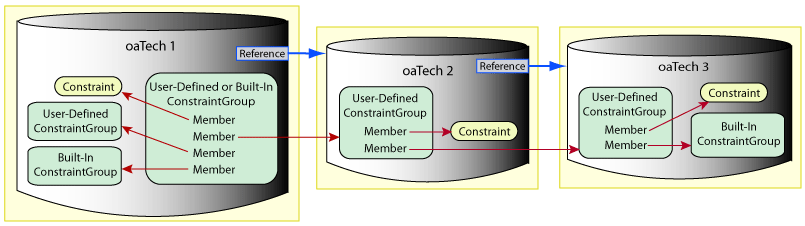
All constraint groups within a graph must have unique names or there is a conflict. Refer to Resolving Conflicts for more information.
A constraint group (built-in or user-defined) in an oaDesign database can have members that are individual constraints, or members that are themselves constraint groups. Members that are individual constraints (built-in or user-defined) can be in
Members that are themselves constraint groups can be in
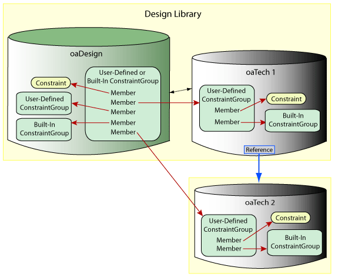
If the oaDesign or oaWafer database in the design library is using an attached oaTech database, the same rules apply, as shown in the following figure.
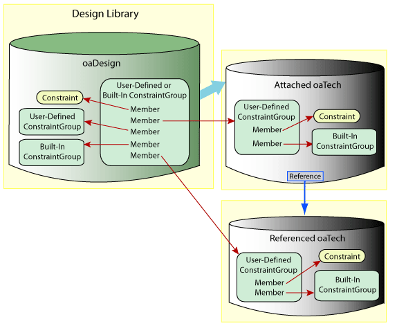
A constraint group (built-in or user-defined) in an oaWafer database can have members that are individual constraints, or members that are themselves constraint groups. In either case, the members must be in same the oaWafer database as the parent constraint group.
OpenAccess creates constraint group headers (oaConstraintGroupHeaders) as needed when an application defines a constraint group member that is a constraint group in a referenced oaTech database. The existence of an oaConstraintGroupHeader object indicates that the constraint group it represents is currently being used by a database object in some way in the design hierarchy. An oaConstraintGroupHeader object provides direct access to the collection of all of the constraint group members that reference the constraint group it represents:
oaCollection<oaConstraintGroup, oaTech> getConstraintGroups() const
In the following example, OpenAccess creates two oaConstraintGroupHeaders for oaTech1. One of the oaConstraintGroupHeaders contains information about the member of ConstraintGroupA that is a user-defined ConstraintGroup in oaTech2. The other contains information about the member that is a user defined ConstraintGroup in oaTech3.
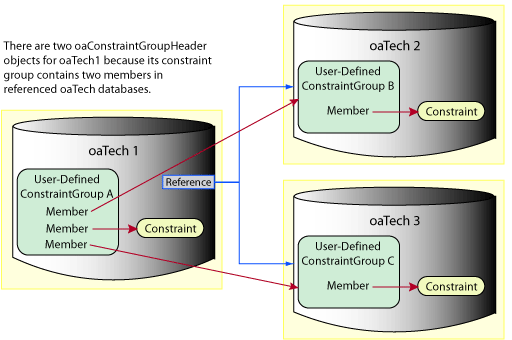
OpenAccess provides functions to find constraint groups across a graph of technology databases. Alternatively, you can search for constraint groups within a single technology database.
The default search supported by the ::find function for constraint groups searches across the technology database graph that is rooted at the current technology database. This is done is a depth first manner, as described in Figure 6: Order of References and Search Order.
For example, the following find function returns all the constraint groups in the graph rooted at the current technology database:
static oaConstraintGroup *find(const oaObject *database,
const oaString &name)
Whereas the following function returns only constraint groups in the current technology database.
static oaConstraintGroup *find(const oaObject *database,
const oaString &name,
oaBoolean local)
Returning collections of constraint groups is handled in a similar, but not identical manner. For example, the following returns a collection of matching constraint groups across the graph (by default):
oaCollection<oaConstraintGroup, oaTech> oaTech::getConstraintGroups(oaUInt4 filterFlags) const
If the filterFlags argument is set to oacTechConstraintGroupIterAll, all the referenced technology databases are searched. To search only the current technology database, specify oacTechConstraintGroupIterLocal. Note that there is also an getConstraintGroups() function that returns the collection of constraint groups in the current technology database. This function is provided for compatibility purposes, and it is recommended that you use the function with the filterFlags argument instead.
To find all the constraint group members in a constraint group, use the following function:
oaCollection<oaConstraintGroupMem, oaConstraintGroup> oaConstraintGroup::getMembers( ) const
The lef2oa, def2oa, strm2oa, and verilog2oa translators can create incremental technology databases with the -techRefs option. Refer to the individual translator documentation for more information.
The lef2oa translator should not add routing layers or default vias in a derived tech if one of the referenced techs has a LEFDefaultRouteSpec constraint group.
The lef2oa translator creates an explicitly named constraint group called LEFDefaultRouteSpec to store information about layers and default vias (VIAs in LEF that have the DEFAULT keyword). Because a graph of technology databases can contain only a single constraint group with that name, lef2oa cannot add or change layers or default vias in a derived tech if one of the referenced techs already contains the LEFDefaultRouteSpec constraint group. This is not a problem if the layer and default via definitions in the LEF input match the definitions in the referenced tech.
The expected use model is that the base tech hierarchy contains a full set of layer and default via definitions (the last tech in that hierarchy can be created with lef2oa), and subsequent derived technology databases created by lef2oa are used only to add sites, via-rules, non-default vias, non-default-rules, and macros.
Alternatively, you can create an incomplete base tech with lef2oa, then add layers and default vias to a derived tech using lef2oa. Note that you will have to remove the LEFDefaultRouteSpec using the OpenAccess Tcl bindings after running the first lef2oa.
Return to Programmers Guide topics

Copyright © 2001-2010 Cadence Design Systems, Inc.
All rights reserved.